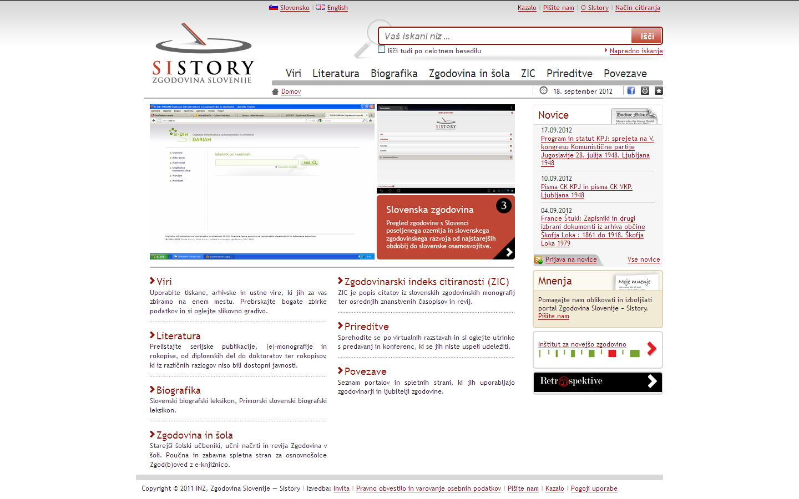

V sodelovanju z zunanjima sodelavcema, programerjem in informatikom, je bil v letu 2011 po smernicah Vzpostavitvenega dokumenta projekta Nadgradnja portala Zgodovina Slovenije iz konca leta 2010 portal SIstory programsko in tehnološko nadgrajen. V prvi fazi so bili analizirani podatki, določeni in postavljeni novi standardi ter infrastruktura za nadgradnjo. Postavljeni ter konfigurirani so bili novi strežniki in iskalnik Sphinx. V drugi fazi sta bila izdelana in implementirana dva nova modula (Smrtne žrtve med prebivalstvom Republike Slovenije med drugo svetovno vojno in Popisi prebivalstva). V zadnji fazi so bili postavljeni novo ogrodje in grafične predloge, izboljšani so bili iskalniki, ki filtrirajo in sortirajo rezultate (tudi po celotnem besedilu). Po nadgrajenem standardu Dublin Core14 so bili standardizirani metapodatki, kar je omogočilo izvoz ali izmenjavo podatkov pri vključevanju v večje nacionalne in evropske sisteme.
Razen oblikovne in strokovne dovršenosti novega portala so bile prednosti poleg omenjenih mdr. tudi nova administracija oziroma pregleden vmesnik za urejanje kompletne vsebine, ki zagotavlja manjšo odvisnost od zunanjih sodelavcev oziroma omogoča interno upravljanje s sistemom. Nadgrajeni portal, ki je bil narejen modularno, pri čemer je bilo dodajanje funkcionalnih rešitev časovno neomejeno, je omogočal enostavno in pregledno uporabo po posameznih vsebinskih sklopih in podsklopih, hitrejše, stabilnejše in popolnejše delovanje sistema – zagotavljal je kvalitetnejšo uporabniško in administracijsko izkušnjo.
Vstopna stran nadgrajenega portala Zgodovina Slovenije – SIstory, 2011.
V letu 2011 je bilo skeniranih 13.000 strani, za digitalizacijo pa smo pripravili 43.000 strani arhivskega gradiva (iz Slovenskega šolskega muzeja fond Šolski listi: statistični vir 1929–1945, iz Narodne in študijske knjižnice v Trstu gradivo Jadranske banke v Trstu in Hrvatske štedionice v Trstu, iz Pokrajinskega arhiva Koper Popis prebivalstva Izole 1890 in iz Zgodovinskega arhiva Ljubljana Popis prebivalstva Novega mesta 1869 in Popis prebivalstva Ljubljane 1869).
V letu 2011 vsebinsko popolnjevanje ni bilo vezano le na že obstoječe vsebinske sklope, zato sta digitalizacija in spletna objava številnih (raznovrstnih) gradiv terjali oblikovanje novih podsklopov oziroma kreiranje nove menijske strukture. Zaradi aktivnega dotoka vsebin je bilo potrebno ažurirati arhivski datotečni sistem za shranjevanje vsebin in indeksirati gradiva oziroma vse dokumente PDF, naložene na strežnik.
Pregled v letu 2011 na novo dodanih vsebin po posameznih sklopih portala SIstory:
VIRI:
Arhivski viri:
V letu 2011 je bil oblikovan razdelek za Arhiv Republike Slovenije oziroma njegovo gradivo, v katerem je poleg osnovnih informacij o arhivu podrobneje (arhivski inventar fonda in historiat zbirke) predstavljena v letu 2010 digitalizirana Zbirka stenografskih beležk zapisnikov sej predstavništev, senata in skupščine Kraljevine Srbov, Hrvatov in Slovencev oziroma Kraljevine Jugoslavije. Gradivo vsebuje transliteracijo zapisnikov stenografskih beležk sej in zasedanj Začasnega Ljudskega predstavništva Kraljevine Srbov, Hrvatov in Slovencev (1919), Zakonodajnega odbora ljudske skupščine Kraljevine Srbov, Hrvatov in Slovencev (1921–1922), Ljudskega predstavništva Kraljevine Jugoslavije (senata in Ljudske skupščine 1932), Senata Kraljevine Jugoslavije (1932–1939) in Ljudske skupščine Kraljevine Jugoslavije (1931–1939). Zapisniki sej in zasedanj so v srbohrvaščini (srbščini, hrvaščini), slovenščini, pisani pa v tiskani cirilici in tiskani latinici. Zbirka predstavlja enega od ključnih virov za raziskovanje politične zgodovine Kraljevine Jugoslavije ter vloge in pomena slovenske politike v njej. To gradivo je nepogrešljiv vir za preučevanje slovenske parlamentarne izkušnje v prvi jugoslovanski državi ter razvoja idejno- in narodnopolitičnih, državnopravnih ter socialnogospodarskih nazorov in politike slovenskih strank v letih 1919–1939.
V letu 2011 je bil oblikovan razdelek za gradivo Narodne in študijske knjižnice v Trstu – Odsek za zgodovino, kjer je bil poleg osnovnih podatkov o inštituciji (kronološki pregled delovanja odseka od ustanovitve do danes in prikaz organizacijske strukture in gradiva) objavljen tudi del njegovega gradiva, ki ga je infrastrukturna skupina digitalizirala v letu 2010: Slavjanska čitalnica v Trstu. Odborovih pomenkov knjiga: 17. december 1865–19. marec 1876, Pevsko društvo Adrija v Barkovljah (Trst). Tajniška knjiga 1894–1912, Slovenska čitalnica v Škednju (Trst). Tajnikova knjiga: 20. december 1897–27. februar 1907, Javna ljudska knjižnica v Nabrežini. Zapisnik: 16. januar 1906–4. marec 1914, Dramatični krožek v Gorici. Zapisnik sej: 15. november 1923–13. september 1926. Digitalizacija teh arhivskih virov predstavlja pomemben prispevek k proučevanju slovenskega kulturnega življenja v današnjem zamejstvu. Gradivo je pomembno ne le zaradi svoje unikatnosti, temveč ponuja raziskovalcu pomemben vpogled v razvitost, organizacijo in tudi stalno prisotnost slovenske kulture tako v urbanem okolju (tržaška Slavjanska čitalnica in goriško gledališko društvo) kot tudi v tedaj popolnoma, danes pa še vedno opazno slovenskem zaledju Trsta (pevsko društvo Adrija v Barkovljah, javna ljudska knjižnica v Nabrežini, slovenska čitalnica v Škednju). Digitalizirano gradivo nadalje nazorno dokumentira povečanje narodnostnih pritiskov po priključitvi zamejstva h Kraljevini Italiji in fašističnem pohodu na oblast.
Tiskani viri:
Ustvarjeni so bili podsklopi Ljubljanski klasiki 1563–1965 za več kot 700 strani obsežen korpus, Mittheilungen des historischen Vereins für Krain (1856–1860) in Stenografski zapisniki Ljudske skupščine LRS s 35 publikacijami iz obdobja 1947–1963.
Dopolnjen je bil sklop Krajevni repertoriji (Alphabetisches Verzeichniß aller Ortschafts und Schlösser Namen des Herzogthums Krain in Dutsch und Krainischer Sprache, Orts-Repertorium des Herzogthumes Steiermark itd.).
Razdelek Statistični letopisi je bil vključen v nov sklop Statistične publikacije, ki smo ga razdelili na Popisne publikacije (s šestimi v letu 2011 digitaliziranimi publikacijami) in Statistične letopise.
Zbirke podatkov:
Smrtne žrtve med prebivalstvom na območju Republike Slovenije med drugo svetovno vojno in neposredno po njej: Metodologiji in historiatu popisa smrtnih žrtev je bilo v letu 2011 dodano zbirno mesto Analize, na katerem smo objavili vmesna in letna poročila projektne skupine iz obdobja 2007–2011. V prvi fazi nadgradnje baze podatkov Smrtne žrtve med prebivalstvom na območju Republike Slovenije med drugo svetovno vojno in neposredno po njej pa je infrastrukturna skupina v sodelovanju s programerjem in projektno skupino v letu 2011 izdelala grafični prikaz žrtev po obdobjih in pokrajinah, s čimer je uporabnikom omogočila vizualizacijo zbranih podatkov.
LITERATURA:
Monografije: v letu 2011 je bilo objavljenih štirinajst zgodovinskih znanstvenih monografij, še posebej plodno je bilo sodelovanje z založbami Obzorja Maribor, Modrijan in Založba INZ, ki so dovolile digitalizacijo in objavo zgodovinskih publikacij (z nekajletnim zamikom od izdaje). Glede objave monografij je programska skupina začela sodelovanje z Zgodovinskim arhivom Ljubljana, nadaljevala pa s sodelovanjem z Arhivom Republike Slovenije, Pedagoškim inštitutom idr.
Rokopisi: v letu 2011 je bilo na portalu SIstory objavljenih dvanajst diplomskih del, eno magistrsko nalogo in en doktorat.
Serijske publikacije: pri serijskih publikacijah (Prispevki za novejšo zgodovino, Zgodovinski časopis, Zgodovina za vse: Vse za zgodovino, Kronika: Časopis za slovensko krajevno zgodovino, Arhivi: Glasilo Arhivskega društva in arhivov Slovenije in Viri) so bile v letu 2011 dodane posamezne številke oziroma letniki 2007, 2008 in 2009 in nekatere starejše številke revije Zgodovina v šoli (2002, 2003 in 2004). Na spletno objavo revije Glasnik Slovenskega etnološkega društva je bila narejena spletna povezava.
V letu 2011 je bil v sodelovanju s kolegom Aleksandrom Lorenčičem oblikovan nov vsebinski sklop, ki je uporabnikom približal raziskave, sinteze in analize procesa tranzicije, tematike, ki je bila v ospredju zanimanja evropske historiografije. Sklop, ki je osvetlil gospodarsko podobo Slovenije v obdobju 1990–2004, je nedvomno pomenil velik prispevek k celovitejši podobi ter predstavitvi gospodarskega življenja Slovencev v obravnavanem obdobju.
Oblikovali smo nov sklop Prireditve, razdelili smo ga na podsklope Predavanja, Virtualne razstave in Konference; v slednjega smo dodali posnetek znanstvenega simpozija Osamosvojitev 1991: država in demokracija na Slovenskem v zgodovinskih razsežnostih, ki je bil posnet z lastno opremo za snemanje, kupljeno v letu 2011.
PROJEKTI-MODULI, VKLJUČENI V PORTAL SISTORY
V letu 2011 smo v bazo SIstory začeli vključevati tudi naslednje module:
Modul Popisi prebivalstva: po smernicah vzpostavitvenega dokumenta projekta Nadgradnja portala Zgodovina Slovenije in v skladu z izhodišči in vizijo infrastrukturnega programa Raziskovalna infrastruktura slovenskega zgodovinopisja je bil izdelan modul Popisi prebivalstva. Sodelovanje z Zgodovinskim arhivom Ljubljana – digitalizacija popisov prebivalstva (arhiv je digitaliziral popis prebivalcev Ljubljane iz leta 1857, inštitut pa je začel s skeniranjem popisa Ljubljane in Novega mesta 1869) in njihova objava (najprej za leto 1830) na portalu SIstory – se je, kot že omenjeno, začelo leta 2010. Ker smo že v začetku načrtovali, da bodo vsebine iz popisnic uporabljali tudi raziskovalci digitalne humanistike, smo se odločili, da te podatke pretvorimo v elektronsko obliko. Po vzoru različnih projektov, ki delujejo po načelu »crowdsourcinga«,15 je infrastrukturna skupina začela vzpostavljati sistem za on-line ročno transkribiranje podatkov s strani različnih uporabnikov. V prvi fazi je bil zasnovan zaprti sistem za transkribiranje in urejanje osnovnih popisnih podatkov (ime in priimek, datum rojstva, bivališče in spol), ki se ponavljajo skozi vse popise prebivalstva in na podlagi katerih je zato mogoče izdelati ne le enotne indekse k popisom, temveč v naslednji fazi tudi začeti standardizacijo imen in priimkov (v letu 2011 je bila tako v večjem delu izvedena pretvorba indeksa popisa prebivalstva Ljubljane iz leta 1830 v na novo oblikovane podatkovne baze, pripravljen pa je bil tudi prenos podatkov za popis prebivalstva iz leta 1857). Odločili smo se, da bomo s pomočjo te standardizacije in programskega orodja Febrl po vzoru projektov, ki potekajo v okviru mreže European Historical Population Samples Network,16 med seboj longitudinalno povezali različne popise prebivalstva. Spodbujalo nas je dejstvo, da vzpostavljena podatkovna baza ne bo omogočala le raziskovanja gospodarskih in socialnih strukturnih sprememb in različnih demografskih režimov, temveč tudi sestavljanje življenjskih zgodb posameznikov, družin, rodbin. Popisi prebivalstva so poleg ostalih sorodnih virov namreč odlična osnova za vzpostavitev longitudinalne baze podatkov, s pomočjo katerih bo mogoče raziskovati posameznike in/ali iste skupine ljudi skozi daljše časovno obdobje. Longitudinalne baze podatkov zgodovinarjem, demografom, sociologom in drugim tako omogočajo odpiranje novih raziskovalnih pristopov pri proučevanju pojavov urbanizacije, rodnostnega obnašanja, poklicnega udejstvovanja, sestave družin, napredka medicine, migracij itd.
Modul M-SIstory – Mobilna aplikacija Zgodovina Ljubljane (ZgoLJ): v letu 2011 je bil kot aplikativni projekt vzpostavljen modul M-SIstory, s katerim smo člani infrastrukturnega programa Inštituta za novejšo zgodovinopokazali, da se ukvarjamo z oblikovanjem najsodobnejših spletnih medijev. V sodelovanju z Zgodovinskim arhivom Ljubljana smo širši javnosti začeli s pomočjo tehnologije nadgrajene resničnosti predstavljati bogato arhivsko slikovno gradivo. Zgodovinski arhiv Ljubljana že od leta 1997 prireja periodične razstave o zgodovini posameznih delov stare Ljubljane. Pri delu smo uporabili pet njihovih razstavnih katalogov, v katerih so opisani Plečnikove tržnice in živilski trg, mestni trg, Ciril-Metodov trg, Stari trg, Gornji trg, Levstikov trg, Novi trg, Kongresni trg in Prešernov trg z okolico. V knjigah je v strjeni obliki predstavljena zgodovina posameznih trgov, ulic, pomembnejših zgodovinskih hiš in ljudi, ki so živeli v teh hišah. Pomembnejši deli besedila so bili prevedeni v angleščino. Ključni del razstav in razstavnih katalogov pa so bili stare fotografije in gradbeni načrti iz bogate fototeke, ki jo hrani Zgodovinski arhiv Ljubljana. Načrtovali smo, da to bogato slikovno gradivo skupaj s strokovnimi opisi predstavimo širši javnosti še s pomočjo tehnologije nadgrajene resničnosti (Augmented Reality),17 se pravi z nadgraditvijo slik realnega sveta z računalniško generiranimi podobami, in sicer v realnem času. V testni fazi smo se najprej omejili na prikaz zgodovine Kongresnega trga. Na podlagi izkušenj podobnih projektov v tujini (Philly History, Museum of London: Streetmuseum)18 smo se odločili za uporabo že uveljavljenih brskalnikov za nadgrajeno resničnost Junaio19 in Layar.20 21. oktobra 2011 je bila tako najprej javno objavljena pilotska verzija mobilne aplikacije ZgoLJ Kongresni v okviru brskalnika Junaio, 25. oktobra 2011 pa še v okviru brskalnika Layar. Pri tem smo ugotovili, da je platforma brskalnika Layar primernejša za nadaljnji razvoj naše mobilne aplikacije ZgoLJ (ZGOdovina LJubljane). Za izdelavo mobilne aplikacije se je uporabilo strežnik s PHP.21 Za opis posameznih zgodovinskih stavb na Kongresnem trgu smo zbrali geografske informacije o stavbah, krajša besedila z osnovnimi opisi ter osnovne predstavitvene sličice. Te informacije o točkah zanimanja smo shranili v bazi podatkov MySQL,22 ki je instalirana na javno dostopnem strežniku in se upravlja s phpMyAdmin. Ko smo vnesli vse primerne podatke o točkah zanimanja, smo morali te informacije prenesti še na platformo brskalnika Layar. V ta namen se je uporabilo format JSON.23 Daljše opise posameznih stavb in dodatne slike smo shranili v okviru portala SIstory in jih pri tem prilagodili za prikaz na mobilnih telefonih. Uporabnik aplikacije ZgoLJ Kongresni dostopa do teh vsebin s povezavo na dodatno vsebino dodano na spletni strani SIstory. Hkrati lahko uporabnik pri orientaciji med točkami zanimanja uporablja tudi zemljevid. Pripravili smo tudi že angleško verzijo mobilne aplikacije in jo poimenovali LjuH – LJUbljana History. Z mobilno aplikacijo, ki je bila kljub znanstvenosti in strokovnosti vsebin trendovsko naravnana, je infrastrukturna skupina ciljala na različne skupine uporabnikov, ki jih zanima zgodovina slovenske prestolnice, predvsem koristna pa je bila za šolarje in šolnike, ki pri svojem delu skladno s kurikulom uporabljajo najnovejše informacijsko komunikacijske tehnologije.24
Po zaključku tehnološke nadgradnje baze SIstory je od julija do decembra 2011 potekalo vpisovanje oziroma inventarizacija (vpis in opis) gradiv po Dublin standardu Core, natančneje po šestnajstih postavkah.25 V prvi fazi so bili v metapodatkovno bazo vneseni podatki o posameznih publikacijah, objavljenih na portalu SIstory, sledila je faza členitve vseh publikacij, ki so plod več kot enega avtorja, na posamezne prispevke – do konca leta 2011 so bili po vseh šestnajstih generalijah razdeljeni in obdelani vsi zborniki iz podsklopa Monografije in publikacije Drevesa, Zgodovina za vse: Vse za zgodovino ter del Prispevkov za novejšo zgodovino in Kronike: Časopisa za slovensko krajevno zgodovino iz podsklopa Serijske publikacije (skupaj nekaj manj kot 5000 dokumentov, kar pomeni skoraj 80.000 standardiziranih vpisov). Na podoben način je bilo potrebno urediti tudi Zbirko stenografskih beležk zapisnikov sej, predstavništev, senata in skupščine Kraljevine SHS oziroma Kraljevine Jugoslavije od 1919 do 1939 (37 obsežnejših publikacij je bilo razčlenjenih na skoraj 1000 standardiziranih vpisov).
24.Mojca Šorn[os.], Poročilo o delu, 19. 1. 2012. Dokumentacija INZ. Točki A in B je za poročilo pripravil Andrej Pančur.
25.Gl. Ana Cvek[os.], Mihael Ojsteršek[os.] in Mojca Šorn[os.], Izhodišča metapodatkovnih sistemov portala Zgodovina Slovenije – Sistory (2008–2016). Ljubljana: Inštitut za novejšo zgodovino, 2022.